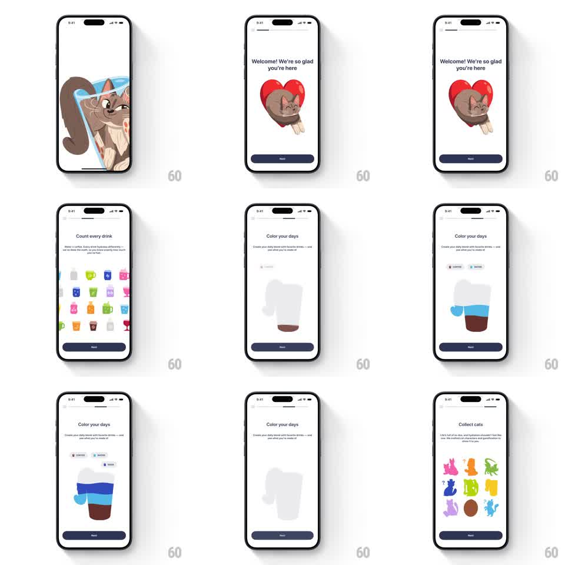

Media
Frame-by-frame

Rebuild this interaction 1:1: Liquid Cats' story-style onboarding - paged cards with progress bars at the top advance through cat mascot scenes, a colorful drink-cup grid, and a cup that layers colored liquids per drink, each page animating its illustration in.

Rebuild this interaction 1:1: Liquid Cats' story-style onboarding - paged cards with progress bars at the top advance through cat mascot scenes, a colorful drink-cup grid, and a cup that layers colored liquids per drink, each page animating its illustration in. ## Integration Integration: stack-agnostic spec - springs given as stiffness/damping, timed motions as duration + curve; map every value to your framework and animation library of choice. ## Scene Light story flow: segmented progress bars along the top (one per page), a headline with subcopy, a large illustration area, and a full-width "Next" button. Pages: "Welcome! We're so glad you're here" (cat mascot hugging a red heart), "Count every drink" (dense grid of colorful drink cups), "Color your days" (cup layering coffee-brown and water-blue liquids), "Collect cats" (grid of colorful cat characters). ## Motion spec Pattern: story pager with per-page illustration entrances, ~600ms per advance. - Progress: the active bar fills across its segment while the page shows (linear, ~4s) and tapping Next jumps it to full. - Page turn: the outgoing page slides left and fades (250ms) as the new page slides in from the right (350ms, ease-out). - Illustration entrance: the mascot/illustration springs in (scale 0.8 -> 1.04 -> 1, ~450ms, spring ~300/18) with the headline sliding up 12px + fade (300ms, +100ms delay). - Color your days: the liquid layers pour in sequence (blue then brown, 400ms each, wavy settling boundary). - Next button: stays fixed; only its label context changes on the final page. ## Calibration - The progress bars are the persistent anchor - they animate, the chrome never moves. - Illustrations are chunky flat vector art; no gradients or shadows on the cats. ## Reduced motion Pages cross-fade (200ms); illustrations appear without springs; progress bars fill statically. ## Don't miss - The heart-hug mascot on page one is the brand moment - it must feel soft, not bouncy. - The Collect cats grid includes mystery (?) slots among the colored cats.